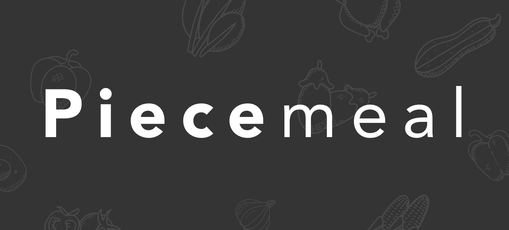

Piecemeal
UX/UI, branding
For my Interaction Design course at Northeastern University, I designed and prototyped a web application.
Empathize
I conducted 4 remote, moderated user interviews to better understand people who cook at home. Specifically, I had the following objectives:
- Understand user habits in / perceptions to cooking
- Understand user scenarios for using recipes
- Understand user perceptions to digital tools
- Identify user needs around recipes
After interviewing with home cooks across age groups and living situations, my major takeaways were that cooking is...
- ingredient-driven - Home cooks typically decide what to cook right before a meal, and therefore aim to use ingredients that they currently have. When deciding on a recipe to use, ingredients take precedence over the directions. When sharing a recipe, people always share at least the general ingredients but not always the steps.
- image-driven - Food not only is gustatory and olfactory, but also visual. When a home cook sees a photo of food, they may be curious or inspired to also cook it. They may pursue the recipe or look for similar recipes. Photos stimulate recipe sharing and provide inspiration.
- flexible - Home cooks, especially experienced ones, understand that cooking is flexible. Cooking often involves improvisation and modifications to recipes. Ingredients can be swapped and measurements don't have to be exact. Actually, more experienced cooks are less likely to even follow recipes, and fall back on tried-and-true dishes from memory. They may use recipes just as guidelines or as lists of general or necessary ingredients to make a dish.
- fulfilling - People find that cooking is an essential basic skill, but also that a successfully home-cooked meal is a personal accomplishment. People can also be proud enough to share photos to friends and family.
And unfortunately, cooking is also...
- time and effort - While home cooks may find cooking cost-effective, social, fun, and a source of pride, on busy days they may consider ordering takeout or going out to eat instead. Eating out instead of cooking is also considered a reward. There's time and effort associated with deciding what to cook. People find that cooking requires a bit of coordination, which can be frustrating. For example, they can be deterred if they don't have certain ingredients.
Define + Ideate
Discovering a user need for a quicker and easier way to determine what to cook, I wrote an elevator pitch to guide my project moving forward.
Piecemeal is a platform for home cooks to record, discover, and share recipes.
Piecemeal provides encouragement to beginner home cooks by being flexible, inspiring, and social.
Classmates helped me create UI sketches given the elevator pitch during a brainstorm activity.

Prototype
I created low- to high-fidelity wireframes, through rounds of critique and iteration.
{kind=link}
Low-fidelity wireframes using Balsamiq.
{kind=link}
Mid-fidelity wireframes using Figma.
Reflection
Although I was already familiar with the design thinking process, this was the first time I actually applied it end-to-end on an individual software design project. I struggled with, but ultimately learned the most in, the Prototype stage. I gained more experience in UI and identity design and gained self-taught technical skills in Figma.
I specifically struggled with coming up with original UI and tried many, many different designs. The rounds of peer critique greatly helped me when I was experimenting. Ultimately, I ended up creating a Material-inspired design. (I was familiar with Material Design having led a Material Design translation project at a former UX internship.) I'll always appreciate existing robust design systems and those who specialize in UI design!